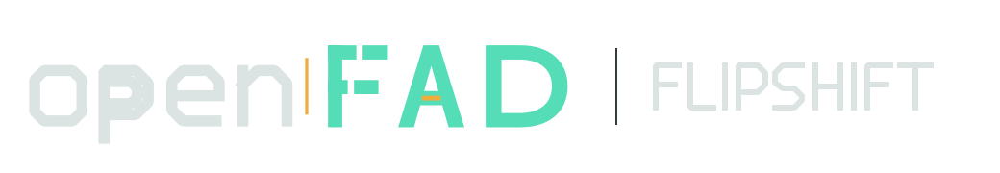

Compact mark / dark interface
MASTER BRAND / 01
openFAD identity system
Light-background master
Deep mint replaces canonical mint where the original color would lose contrast on white.
Responsive system
The wordmark carries the full identity. The compact F-axis-D mark takes over below 120 px.
Compact mark / light interface
Single color / white
Single color / black
Small-size check
The central amber datum remains a full raster pixel at 16 px and the F/D counters stay open.
16
24
32
48
64
128
Product relationship
Product descriptors remain secondary and replaceable; they never enter the master-brand mark.

Core palette
Amber is a measured datum, not a co-primary color.
Mint
#54DDB7
Deep mint
#16735E
Amber
#EFAD3E
Carbon
#101416
Mist
#DBE3E3
Application signal
Examples show scale and hierarchy only; no project interface source is modified.